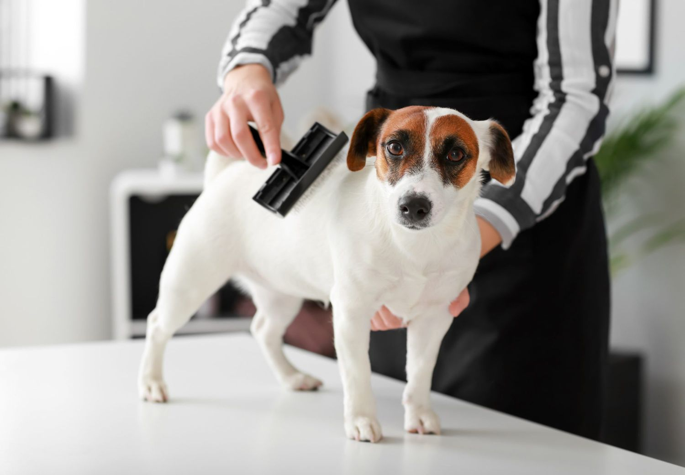
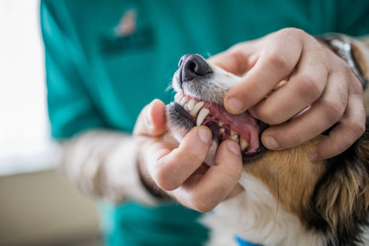
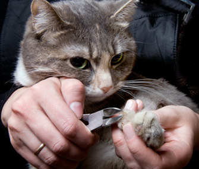
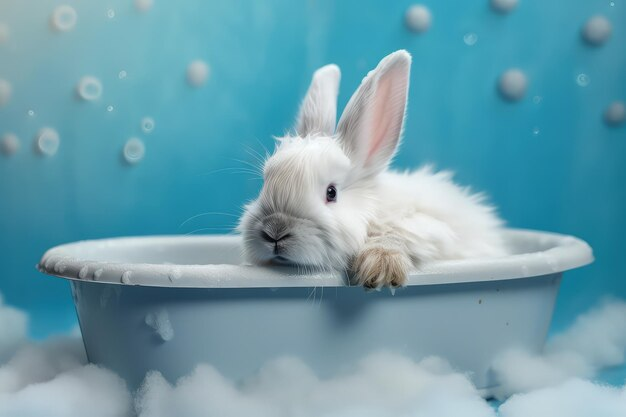

Welcome to our grooming tips page! Grooming is essential for your pet's health and well-being, and we're here to provide you with the knowledge and tools you need to keep your furry friend looking and feeling their best. From regular brushing to professional grooming, we've got you covered. Explore our tips and advice, and give your pet the care they deserve.
Brushing and Combing
Regular brushing and combing is essential for maintaining a healthy coat and skin. Start by using a soft-bristled brush to remove any dirt or debris, then follow up with a comb to remove tangles and mats. Be gentle and avoid pulling on the fur, as this can be painful for your pet.
Dental Care
Dental health is important for overall health, so it's essential to take care of your pet's teeth. Use a pet-specific toothbrush and toothpaste, and gently brush their teeth in circular motions. If your pet is resistant to toothbrushing, there are also dental chews and water additives that can help maintain their dental health.
Nail Trimming
Trimming your pet's nails is important for their comfort and health. Use a pet-specific nail trimmer and be careful not to cut too close to the quick, as this can be painful and cause bleeding. If your pet is anxious or resistant to nail trimming, try acclimating them to the process gradually and offer treats as a reward.
Bathing
Use a mild, pet-friendly shampoo and avoid getting water in your pet's ears or eyes. Gently massage the shampoo into their fur, then rinse thoroughly. If your pet has long fur, use a conditioner to help prevent tangles and make it easier to brush.